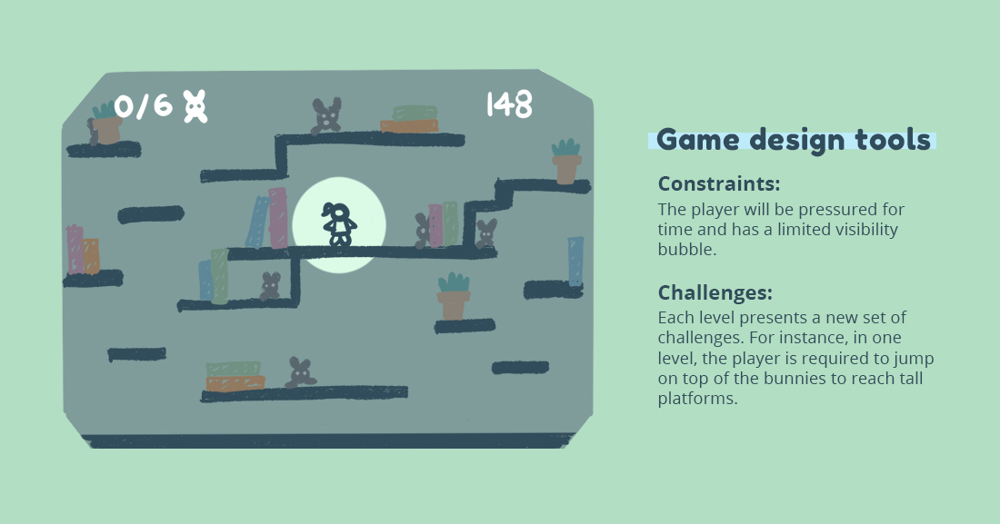

Hopping Dustballs is a platform game where the player is a toy
janitor that wakes up at night to eradicate dustbunnies by tagging them.
The player needs to find all of them within a limited time to complete a
level. During the development process, I focused on two game design
tools:

In GDevelop, I designed a 3-level prototype to determine
whether there was a gradual transition in difficulty between the
levels with the introduction of the ghost bunnies. Ghost bunnies are
bunnies that are semi-transparent (and also very sneaky).